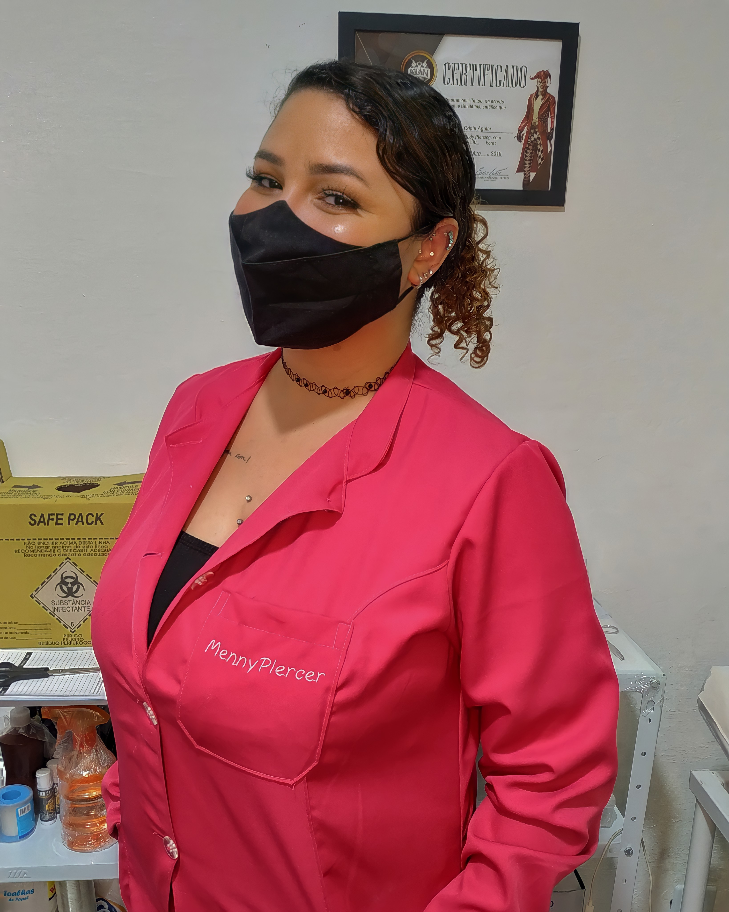

Olá sou a Meriene Oshiro, mais conhecida como Menny Piercer, sou Body Piercer aqui na região do ABC. Faço perfurações a mais de 2 anos, com toda segurança e cuidados, buscando sempre me atualizar para melhor atende-los, amo o que faço!
